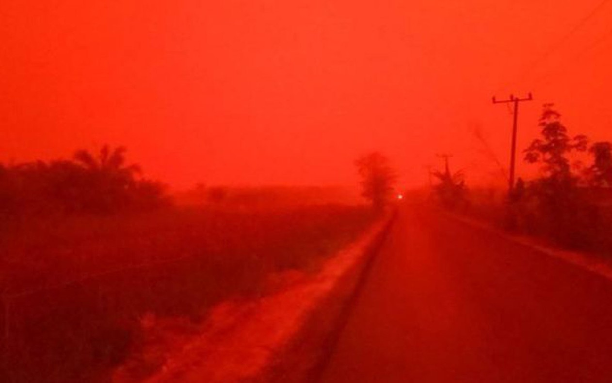
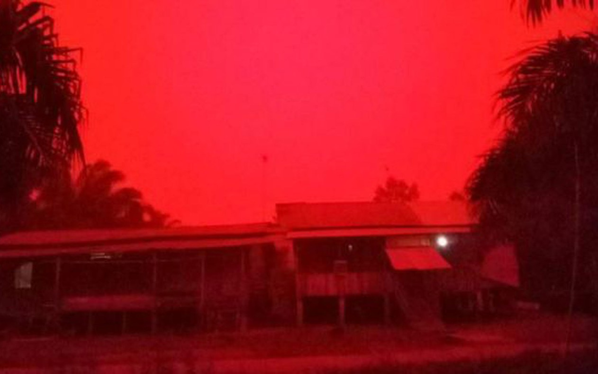

Queimadas deixam céu vermelho na Indonésia: 'Isso não é Marte, é a Província de Jambi'

A situação na província de Jambi, na Indonésia, parecia ter saído de um filme pós-apocalíptico.
O céu ficou vermelho sobre uma Província da Indonésia neste fim de semana, devido a incêndios florestais que se espalharam em grande parte do país.
Todos os anos, incêndios na Indonésia criam uma fumaça que pode pode acabar cobrindo todo o sudeste da Ásia.
Uma moradora da Província de Jambi que tirou fotos do céu disse que a fumaça "feriu seus olhos e sua garganta."
Eka Wulandari, da cidade de Mekar Sari, capturou a vermelhidão do céu em uma série de fotos tiradas por volta do meio-dia no sábado (21).
"A neblina gerada pela fumaça estava especialmente espessa aquele dia", disse ela.
Um meteorologista disse à BBC que a estranha coloração do céu foi causada por um fenômeno chamado Dispersão de Rayleigh, em que a luz é dispersada pelas partículas, e isso muda a cor do céu.

A fotógrafa nega que as fotos sejam falsas.
Eka Wulandari postou as fotos no Facebook e elas foram compartilhadas mais de 21 mil vezes desde então.
Mas ela disse à BBC News Indonésia que muitas pessoas duvidaram da veracidade.
"São fotos e vídeos reais, que tirei com meu telefone", diz ela, que afirma que as condições continuaram na segunda-feira.
Outro usuário do Twitter postou um vídeo mostrando o céu com cores similares.
"Isso não é Marte, é a Província de Jambi", disse Zuni Shofi Yatun Nisa. "Nós, humanos, precisamos de ar puro, não de fumaça."
Explicação científica
A agência meteorológica da Indonésia, BMKG, disse que imagens de satélite revelaram diversos pontos de distribuição de "fumaça espessa" na região de Jambi.
O professor Koh Tieh Yong, da Universidade de Ciências Sociais de Singapura, explica que o fenômeno tem a ver com certos tipos de partículas que estão presentes no ar quando há neblina causada pela fumaça.
"Na neblina causada pela fumaça, as partículas mais abundantes têm cerca de 1 micrômetro, mas elas não mudam a cor da luz que nós vemos", explica ele à BBC.
"No entanto, também há partículas menores, com cerca de 0.05 micrômetros ou menos, que não fazem muita neblina mas têm a tendência de dispersar mais a luz vermelha do que a azul — e é por isso que você veria mais vermelho que azul."
O céu na cidade de Mekar Sari ficou profundamente vermelho.
Ele diz que o fato de as fotos terem sido tiradas por volta do meio-dia pode ter feito o céu parecer ainda mais vermelho.
"Se o céu está no alto e você olha para cima, você está olhando para a linha do sol, então pareceria que uma porção maior do céu é vermelha."
O professor Koh acrescentou que esse fenômeno não "modificaria a temperatura do ar".
O nível de fumaça e neblina observado em 2019 foi o pior em anos. Elas são causadas por queimadas na Indonésia e, em menor grau, na Malásia.
Os incêndios normalmente têm um pico entre julho e outubro, que é a temporada seca na Indonésia. De acordo com a agência nacional de resposta a desastres do país, mais de 328 mil hectares já queimaram só nos primeiros oito meses do ano.
Parte da culpa é de grandes corporações, fazendeiros e pequenos agricultores que se aproveitam das condições de seca para limpar a vegetação por meio de queimadas. A área depois é usada para plantações de palma, que geram polpa, óleo de palma e papel.
A técnica de queimada é a forma mais fácil para os agricultores da região para limpar suas terras e se livrar de doenças que afetam suas plantações.
No entanto, o fogo frequentemente foge de controle e atinge áreas florestais protegidas.
As queimadas são ilegais na Indonésia, mas têm sido toleradas pelas autoridades, com muitos críticos dizendo que corrupção e má administração contribuem para a situação.